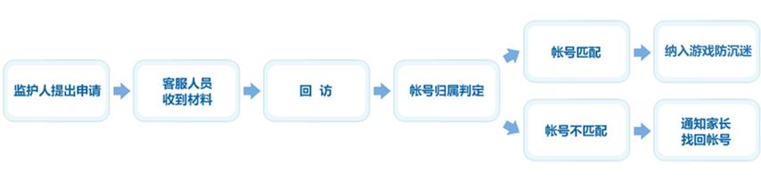

监护申请流程

流程介绍详细说明 ←点击展开
监护人提出申请
- 在监护人发现被监护人有沉溺腾讯网络游戏的情况下，监护人可向腾讯公司申请发起未成年人家长监护机制。
- 监护人 需亲自通过邮寄方式 向我司提供有效材料，向腾讯公司提出未成年人账户监控的申请。在收到邮件后，我司即开始启动监护机制审核流程，首先进入疑似账号身份确认期。
疑似账号身份确认期（15 个自然日）
- 在判断申请材料完整的情况下，我司将通过官方邮箱联系疑似帐号归属者，告知其在 15 个自然日内将按照监护人需求对其账号进行相关操作，并要求疑似账号归属者提供身份材料以便我司判定其与监护人监护关系；
- 若疑似账号归属者在 15 个自然日内不能提供有效身份证明或逾期提供，则默认为疑似账号归属者与被监护人身份相符。我司即按照监护人申请要求，对其游戏账号纳入防沉迷系统；
- 若疑似账号归属者在 15 个自然日内提供的身份证明与被监护人相符，我司即按照监护人申请要求，对其游戏账号纳入防沉迷系统；
- 若疑似账号归属者在 15 个自然日内提供的身份证明与被监护人不符，我司则无法判定其与被监护人的身份关系。在此情况下，为保障用户游戏账号安全，我司将通知监护人通过公安机关出具账号找回协查证明，由我司协助被监护人找回游戏账号后再进行后续操作；